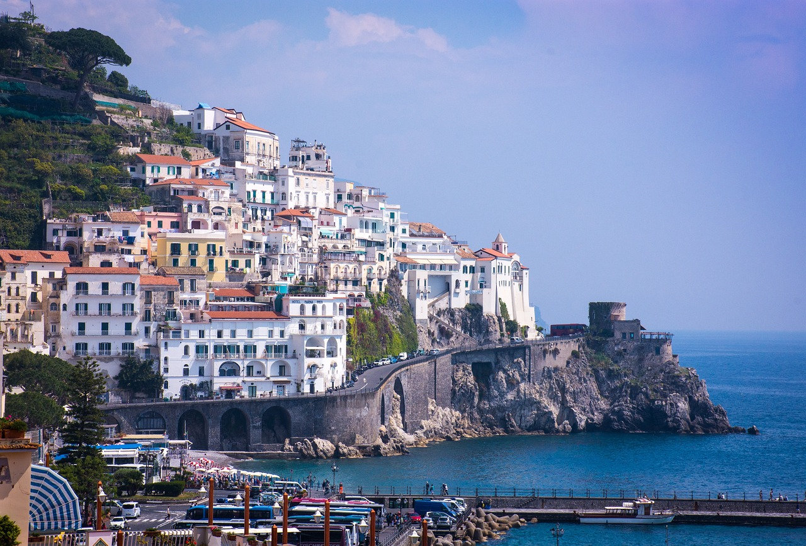
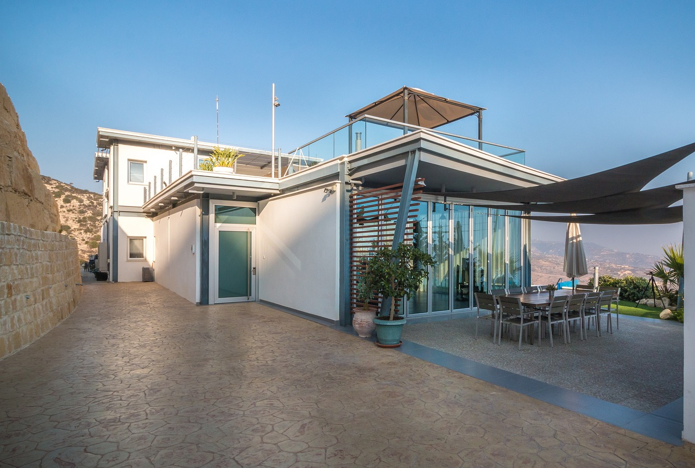
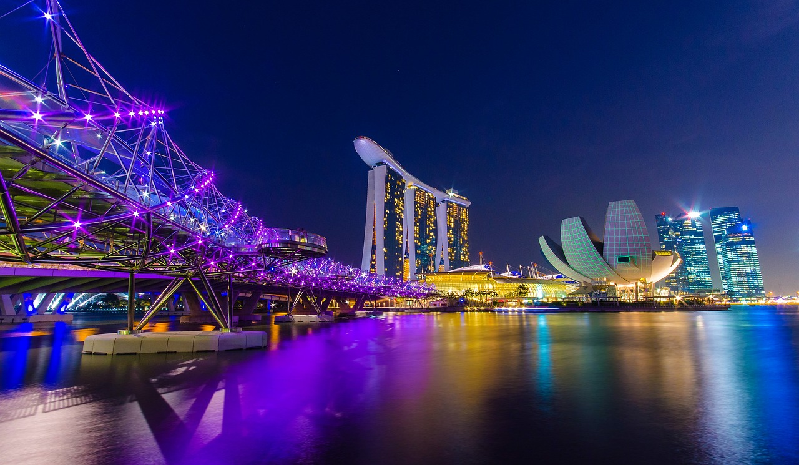

Amalfi Coast

Amalfi Coast byPixabay
The Amalfi Coast is such a dreamy summer destination. It has stunning cliffs, colorful little towns like Positano and Amalfi, and gorgeous sea views, it truly feels like you’ve stepped into a postcard. The weather is perfect in summer—sunny and warm—which makes it great for beach days, boat rides, and taking a stroll through the beautiful streets. The culture here is also something special. Ravello’s summer festival brings music and art to life in beautiful outdoor settings, and the historic buildings in towns like Amalfi and Ravello add so much character. Whether you want to relax on a busy beach or go exploring in quiet coves, there’s something for everyone. Plus, the food is amazing—fresh seafood, zesty limoncello, and unique handmade ceramics make every meal memorable.
Bora Bora

Bora Bora Bungalows byPexels
Bora Bora feels like a true island escape. Picture clear turquoise waters, lush greenery, and those iconic bungalows over the ocean—it really does look like paradise. The calm, warm water is perfect for snorkeling, paddleboarding, or even swimming with rays and sharks if you’re feeling adventurous. Since summer is considered the off-season, there are fewer crowds, which means more peace and quiet. And even though it might rain from time to time, the showers don't take away from the island's charm.
Cyprus

Cyprus Villas byPixabay
If you’re looking for a mix of beach time and culture, Cyprus is a great choice. The beaches here are sunny, spacious, and the water is crystal clear—perfect for relaxing or trying out water sports. But there’s also so much history packed into this island, from ancient ruins to medieval castles. The food is another highlight—Cypriot cuisine blends Greek, Turkish, and Middle Eastern flavors, so think meze platters, grilled halloumi, and fresh seafood. Summer also brings energy to the island with fun festivals, concerts, and nightlife in places like Ayia Napa and Limassol.
Greece

Sunset view from Greek homes byPixabay
Can someone just say Greeeeece!!! Yes, Greece is full of breathtaking views and unforgettable moments. Whether you get lost in the beauty of Santorini’s white and blue buildings, hike through mountain trails, or enjoy the coast, the landscapes are just incredible. With so many islands and beaches to choose from, you can go from party spots to quiet hideaways depending on your mood. The history here is everywhere, from ancient ruins to charming little villages. If you love a bit of adventure, there’s plenty to do—from cliff diving to water sports. And let’s not forget the food—Greek dishes are full of fresh, bold flavors and cater to just about every diet. I'm sold!
Singapore

Singapore Marina Bay byPixabay.
I've been there but boy do I want to go back! Singapore is one of those places where nature and city life blend so seamlessly. It’s known as the “Garden City” for a reason—you’ll find green parks and nature trails right next to high-tech buildings and futuristic landmarks. It’s also incredibly diverse, with a mix of cultures that you can see in the neighborhoods, traditions, and especially the food. The hawker centers are a must-try, serving amazing meals (some even Michelin-rated!) at super affordable prices. The city is clean, safe, and easy to get around, which makes exploring stress-free. With famous spots like Gardens by the Bay, Marina Bay Sands, and tons of shopping and nightlife, there’s never a dull moment.
Resources
Image Credits
- Amalfi Coast byPixabay.
- Bora Bora Bungalows byPexels
- Cyprus Villas byPixabay
- Sunset view from Greek homes byPixabay
- Singapore Marina Bay byPixabay
Interesting Links
- Why Is Everyone on the Amalfi Coast Except Me?
- Why You Should Visit Bora Bora at Least Once
- Episode #1: Why You Must Visit Cyprus
- Greece in Summer: Where to Go, What to Do, the Weather, & More
- Singapore in Summer: Your Guide to the Best Vacation Ever
Fonts
Headings: (h1)Verdana, sans-serif & (h2)Geneva, sans-serif
Body: Verdana, sans-serif